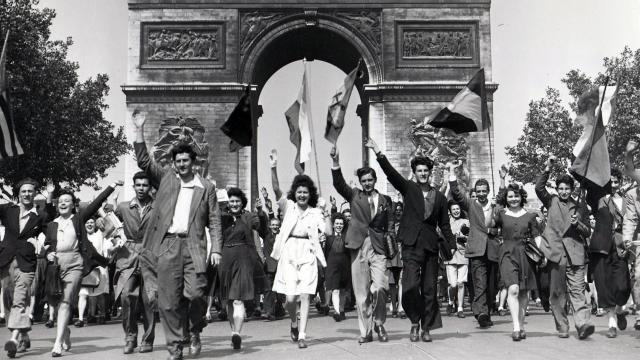

L'Avenue de la Libération
En 1947, la rue du Petit-Parc a été baptisée avenue de la Libération en souvenir des combats meurtriers opposant les membres du bataillon HOCHE et les occupants allemands pour la Libération de Saint-Maur-des-Fossés en août 1944.
